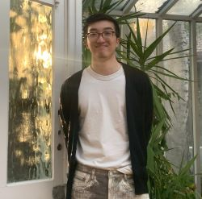

THBKG: A Temporal Biomedical Knowledge Graph for Decision-Aligned Clinical Advancement Prediction
arXiv:2608.05982 [cs.LG]

AI for drug discovery
Target prioritisation · LLM forecasting
PhD candidate · Queen Mary University of London
I work on early-stage drug target discovery, prioritising novel targets before they reach the clinic. I test whether large language models can generate hypotheses that genuinely forecast clinical outcomes rather than recall them, scoring every model only on what was known when each decision was made.
I am supervised by Arkaitz Zubiaga, Claudia Cabrera and Mani Mudaliar, and funded by UKRI BBSRC through the AI for Drug Discovery Doctoral Training Programme, with Recursion as industrial partner.
Highlights
Current interests
Ranking target–disease pairs by their chance of entering or advancing in the clinic, with a focus on novel targets that have little direct evidence yet. Models see only evidence dated before each decision, and are tested on whether they beat simpler baselines when evaluated forward in time.
Using large language models to propose and rank therapeutic hypotheses, and testing whether they genuinely forecast or only recall: each model is scored on outcomes after its training cutoff, with retrieved evidence limited to what was published before the decision date.
Generative adversarial networks for demographic inference in Anopheles mosquitoes, benchmarks for single-cell foundation models on perturbation prediction, and transformer models that predict gene expression from regulatory DNA sequence.
Thesis project
Temporal Evidence in Target Discovery: Leveraging Longitudinal Biomedical Knowledge for Novel Therapeutic Target Prioritisation
arXiv:2608.05982 [cs.LG]
G3: Genes | Genomes | Genetics, 16(7), jkag114
Proceedings of the 42nd International Conference on Machine Learning (ICML 2025), PMLR 267
Software, datasets and hackathon builds
Dataset · CC-BY-4.0
A dated biomedical knowledge graph built from Open Targets 26.09 and linked sources, with a benchmark that ranks Phase II target–disease pairs by their likelihood of reaching Phase III.
Hackathon · Jun 2026
Tests whether an AI scientist can decide deterministically if the biological evidence behind a target-prioritisation claim is enough to support it. Agents gather evidence through ToolUniverse, with Claude for reasoning, and competing hypotheses are ranked in an arena.
Hackathon · Jun 2026
An orchestrator, four scientist divisions working over live public databases, and a reviewer panel that sends work back. The go/no-go verdict is derived from cited evidence.
Hackathon · Jul 2026 · 36 h
A patient-side care companion with longitudinal memory. It captures the consultation with ambient voice AI, then follows the care plan with voice check-ins in the weeks after.
Side project
Public speaking and interview practice for people with Tourette syndrome. A tic-free voice relay passes on only the sentence the speaker intended.
MSc thesis · 2022
Predicts gene expression from local regulatory sequence with a transformer, then uses attention, integrated gradients and SHAP to recover biologically relevant DNA motifs.
Industry and research roles
Bactobio · London · 3 months
Applied DNA language models and biological foundation models to microbial sequencing data to build a recommendation engine for microbial generation. Added uncertainty estimates with Bayesian neural networks and contributed to the experiment-in-the-loop platform.
Queen Mary University of London
Used deep learning on simulated population genomics data to infer recent demographic history of Anopheles populations, including changes in population size and migration between locations. Packaged the tools for publication.
Dümmen Orange · De Lier, Netherlands
Built a genotype imputation framework for polyploid plants that raised genomic selection resolution and reduced sequencing cost, and packaged it in Docker for the company's genotyping pipeline.
Degrees, funding and skills
Hobbies and community
Weekend builds with multi-agent systems and voice AI, most recently at the Multiagents Hackathon and the Juno × Anthropic healthcare hackathon in London.
From Bench to Breakthrough, a Substack on building AI for drug discovery, starting with a weekend spent building a virtual biotech scientist.
Co-organiser of the bi-weekly DERI lunch-and-learn seminar at Queen Mary.
London, United Kingdom
Happy to talk about target discovery, temporal evaluation, or a collaboration.
pui.siu@qmul.ac.uk